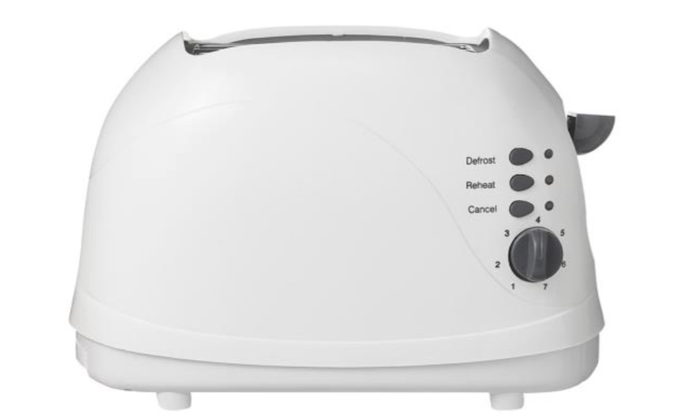

Individuele opdrachten
Week 1:
Kies een product waar jijzelf dagelijks mee interacteert en analyseer het gebruik
hiervan met jezelf in de hoofdrol als user. Breng je product en de interactie ermee in kaart, kies zelf een geschikte vorm. Omschrijf (kort) drie 'fijn' en drie 'pijn'-punten in de interactive. Omschrijf (indien mogelijk) de allereerste keer dat je het product ging gebruiken, waarom je dit deed en hoe het verliep. Schrijf een aantal Userstories. Bedenk een manier om een studiegenoot te laten interacteren met jouw gekozen
product, en registreer zijn ervaring en bevindingen, is zijn/haar interactie met hetzelfde product hetzelfde of anders? Bedenk een verbetering voor dit product of vooral jouw interactie ermee, maak!hier in tekst en beeld een visualisatie voor.
Gekozen product: De broodrooster

Bedenk een (digitaal) product dat mensen helpt gezonder en actiever te leven. Begin bij het in kaart brengen van de persona’s. Werk dan een customer journey uit. Bedenk vervolgens verschillende product concepten.
Week 2:
Je gaat in een groepje van 3 een (specifiek onderdeel van een) website of app testen met minimaal 2 ‘first time user’ testpersonen. Deze testpersonen zijn mensen die jullie niet kennen, dus geen familie vrienden of bekenden. Je maakt een groepsverslag en voegt je individuele reflectie toe over de rollen die je hebt ingenomen. Zie verder de opdrachtomschrijving.
Gekozen app: thuisbezorgd.nl
Ontwerp een mobiele website om snel en gemakkelijk eten te bestellen en te laten bezorgen. De klant (FÜD) specialiseert zich in gezonde maaltijdbezorging. Maak een wireflow van een gebruiker die de website voor het eerst gebruikt. Werk de flow uit in een klikbaar prototype. Zorg dat je wireframes voldoende gedetailleerd zijn. Rapporteer je proces in een verslag. Laat zien hoe je tot je uiteindelijke wireflow komt.
Week 3:
Analyseer en verbeter sociale interacties. Benoem de sociale interacties en
kijk of je ze kunt linken aan de principes van Cialdini. Welke aanpassing zou je doen ter verbetering van de bestaande sociale interacties?
Of welke sociale interactie zou je toevoegen? Onderbouw je aanpassing. Illustreer je aanpassing met screen designs of wireframes.
Gekozen app: thuisbezorgd.nl
Maak een visual (re-)design van de website van een band of artiest. Werk tenminste 2 pagina’s uit,
waarvan in ieder geval de homepage. Doe dit voor zowel mobile als voor desktop.
Denk na over het concept. Wat is het doel van de website? Wat is het verhaal dat je wil vertellen?
Hoe ga je dit communiceren? Wat betekent dit voor kleur, typografie, fotografie, etc.?
Rapporteer je proces in een verslag. Laat zien hoe je tot je uiteindelijke design komt.
Gekozen artiest/band: Radiohead
Week 4:
Bedenk een slimme en gebruiksvriendelijke manier om: een zelfgemaakte taart aan te bieden op zelfgemaaktetaart.nl. Maak een overzicht van alle input die je van de gebruiker wenst. Bepaal volgorde en verdeling in stappen. Bepaal geschikte input controls. Bepaal ‘slimme defaults’. Denk na over passende labels en andere teksten.